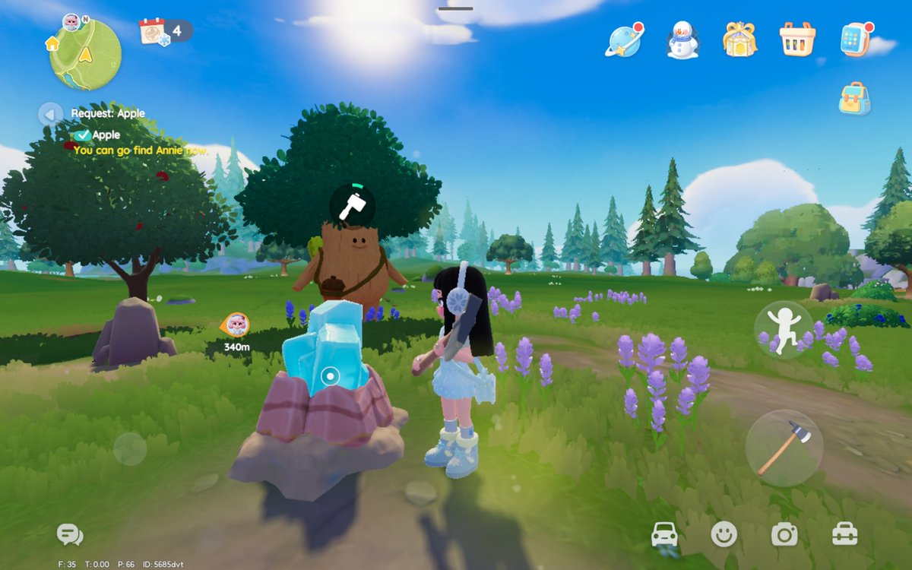

Fluorite 12 · Oak Timber 12 · Egg ada di gambar ke‑3 · Bubble masih dicari.



08/02/2026 · Latest community update (Rairaa).
Fluorite 12 · Oak Timber 12 · Egg ada di gambar ke‑3 · Bubble masih dicari.
Manual update: 08/02/2026 (Rairaa daily). Fluorite & Oak di rumah 12, egg ada di gambar 3, bubble belum ada info.
Karena Fluorite & Oak ada di nomor yang sama, ambil keduanya dalam satu loop lalu cek Egg via petunjuk gambar ke‑3.